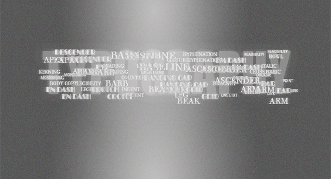
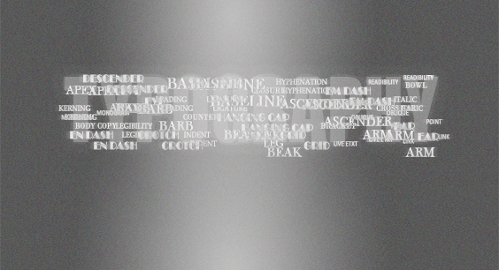
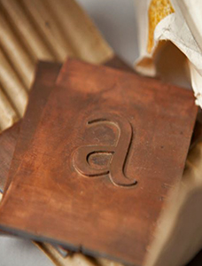

ALL ABOUT TYPOGRAPHY
Brief History of Typograhy
Typography is the art and technique of arranging type to make written language legible, readable, and appealing when displayed. The arrangement of type involves selecting typefaces, point sizes, line lengths, line-spacing (leading), and letter-spacing (tracking), and adjusting the space between pairs of letters (kerning[1]). The term typography is also applied to the style, arrangement, and appearance of the letters, numbers, and symbols created by the process. Type design is a closely related craft, sometimes considered part of typography; most typographers do not design typefaces, and some type designers do not consider themselves typographers.[2][3] Typography also may be used as a decorative device, unrelated to communication of information.
Snippets from History
1928 — Eric Gill’s pencil and ink drawings for Gill Sans
The fifth best-selling typeface of the twentieth century. Gill (1882-1940), a British sculptor, stonecarver, printmaker and typeface designer, designed Gill Sans in 1926–1928 for Monotype at the request of Stanley Morison, who was interested in a contemporary sans serif face with British character. Classified a “humanist” sans-serif face intended to be legible in both display and text, its proportions were based on Roman letterforms rather than being constructed geometrically. Famed uses of Gill Sans include programs for British Rail, the London Underground, Penguin Books, Saab Automobile, and the BBC. Note the use of white gouache paint to touch up the letterforms.
1937—Copper patterns for Eric Gill’s Joanna
Copper pattern plates were utilized in the manufacturing stage between the drawings and the metal type itself. A transitional serif typeface named for one of Gill’s daughters, Joanna was designed in 1930 and originally intended as a proprietary face for his printing business, Hague and Gill, opened in Buckhamshire, outside London, with son-in-law René Hague. It was adapted by Monotype in 1937 and made publicly available in 1958. Gill set the text of An Essay on Typography, his classic book on letterforms, typesetting and page design, in Joanna. In the book, he demonstrated and championed the first use of “rag right” rather than justified columns to create even letter- and word spacing.
1939—“Big Red,” a comprehensive specimen book of Linotype faces
Published by Mergenthaler Linotype Company, this classic reference tool measures 7.75 x 10.75” and contains 1,215 pages of type specimens for hand-set headlines and text set on linotype machines, including model ads and announcements with lavish use of dingbats, ornaments and borders.
1932—Littleworth
These rare, original letter drawings are in the Monotype archive for Littleworth, a hot-metal typeface no longer available,
Helvetica and it's rise to power
Helvetica is, by all accounts, a typographic celebrity. But how did it get there…and why didn’t Univers get the spotlight instead?
Speculative historical thinking, or counterfactual history, whether by historians or novelists, tries to imagine what might have happened if the outcome of a key moment in the past had been different. It has usually been applied to momentous events such as the expulsion of the Moors from Spain, the American Civil War, the two World Wars or the assassination of John F. Kennedy. But suppose we apply such thinking to something more mundane: the popularity of a typeface. Like Helvetica and Univers…for example.
In 1957 three typefaces, all designed in the same neo-grotesque manner, were released: Neue Haas Grotesk by Eduard Hoffmann and Max Miedinger, Univers by Adrian Frutiger, and Folio by Konrad F. Bauer and Walter Baum. The first of them, eventually under the name Helvetica, emerged as the most popular. But contrary to the implications of the eponymous 2007 movie by Gary Hustwit, this success was neither immediate nor pre-ordained. There were a handful of moments in Helvetica’s history that have proved to be crucial.
Modern Typography
Design concept
Modern typography reflected a modern, universal method of communication. This design concept assumes passive, almost automatic – subconscious visual experience. It counts on rationality of both, graphic designer/producer of the message and the audience that is receiving the message. The act of perception that is involved is simple act of seeing; reader is passive, detached and objective. "[Typographic style and layout] do not obstruct the transmission of meaning." [1] Jan Tschichold codified the principles of modern typography in his 1928 book, New Typography. He later repudiated the philosophy he espoused in this book as being fascistic, but it remained very influential.
Typeface
The hallmark of early modern typography is the sans-serif typeface. "Because of its simplicity, the even weight of its lines, and its nicely balanced proportions, sans serif forms pleasing and easily distinguished word patterns — a most important element in legibility and easy reading."
Objective
The Modern typography states as its first objective to develop its visible form out of the functions of the text. For modernist designers it is essential to give pure and direct expression to the contents of whatever is printed: "Just as in the works of technology and nature, 'form' must be created out of function. Only then can we achieve typography that expresses the spirit of modern man. The function of printed text is communication, emphasis (word value), and the logical sequence of the contents."[3] "The trend in modern typography is definitely toward simplicity and legibility, employing forms that comply with the natural inclination of the human eye to seek harmony and ease."